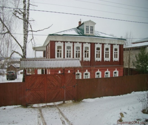

Расположен по адресу: Киржачский район, село Заречье, ул. Центральная, дом 19.
Музей-усадьба фабриканта-шелковика Думнова С.И. – это единственный в России музейный комплекс по истории ручного шелкового ткачества - уникального старинного промысла. Промысел был распространен с начала 19в. во всем бывшем Покровском уезде Владимирской губернии и не имел аналогов в других регионах России. Ныне полностью исчезнувший, он является неотъемлемой частью исторического и культурного наследия Владимирского края.
Музей создан известной московской художницей по куклам, внучкой фабриканта Думнова С.И. – Масленниковой Галиной, выкупившей свой родовой дом у государства более 15 лет назад и восстановившей его с исторической точностью. По заключению ведущих экспертов Государственного института искусствоведения этот дом, украшенный богатой аргуновской резьбой, представляет значительную художественную и историческую ценность и входит в комплекс домов, еще сохранившихся в Заречье, напрямую связанных с шелковым производством и сочетавшими в себе жилую и производственную функцию.
Дом фабрикантов Думновых является главной составляющей большой усадьбы, раскинувшейся на высоком берегу реки Шерна с многочисленными цветниками, фруктовым и ягодным садом и двумя большими полянами, выходящими к реке. На территории усадьбы находится традиционная для сельских ткачей бревенчатая фабрика Светелка – копия старинной, с действующим ручным оборудованием по изготовлению шелкового бархата. Здесь вы увидите коллекцию образцов старинных шелковых и бархатных тканей 19в. и редкостную женскую одежду, пошитую из этих тканей.
В Светелке также находится уникальная выставка кукол, объединенных единым сюжетом на тему жизни русской деревни и предметы крестьянского быта сельских ткачей 19 века.